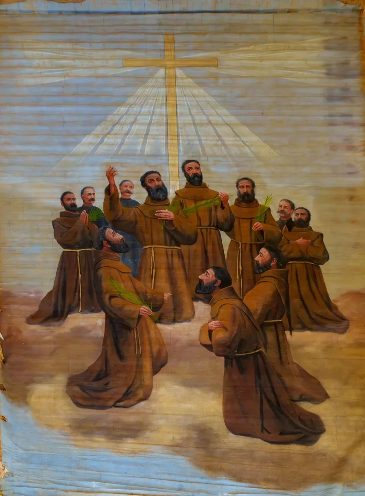

The Massabki brothers were laymen of Damascus, and what the tradition remembers of their last night is a profession of faith: Francis told his attackers he was a Maronite Christian and in that faith he would die, and Abdel Moati answered, “I am a Christian, kill me, I am ready.” No prayer written by them has come down in the sources used for this site. So this page offers two traditional prayers that fit their witness. They are fitting choices, not their words.

The official image of the eleven Martyrs of Damascus, issued for their beatification on October 10, 1926. Author unknown; published without copyright notice, public domain in the United States, via Wikimedia Commons.
Both texts are in the public domain and are printed as published. The Creed is the traditional English form from the 1662 Book of Common Prayer. The psalm is Psalm 26 in the Vulgate numbering (Psalm 27 in modern Bibles), in the Douay-Rheims translation. Neither is recorded as a prayer of the brothers.
The Apostles' Creed
I believe in God the Father Almighty, Maker of heaven and earth: And in Jesus Christ his only Son our Lord, Who was conceived by the Holy Ghost, Born of the Virgin Mary, Suffered under Pontius Pilate, Was crucified, dead, and buried: He descended into hell; The third day he rose again from the dead; He ascended into heaven, And sitteth on the right hand of God the Father Almighty; From thence he shall come to judge the quick and the dead. I believe in the Holy Ghost; The holy Catholick Church; The Communion of Saints; The Forgiveness of sins; The Resurrection of the body, And the Life everlasting. Amen.
Purpose
To state the faith the brothers would not give up. It is the oldest short summary of what Christians believe.
How to pray
Standing, slowly, and aloud. Think of the brothers as you say “I believe,” and of the faith they stayed true to.
When & how long
On their feast, July 10, or whenever your faith is under pressure. About one minute.
Source & tradition
The Apostles’ Creed in the traditional English of the 1662 Book of Common Prayer, as published by the Church of England; public domain. Catholic and Maronite worship use other English translations, with small differences in wording (for example “Holy Ghost” for “Holy Spirit”). Labeled a fitting profession of faith, not a prayer of the Massabki brothers.
Spiritual fruit
Steadiness in faith. The Creed is a statement of belief, not a request.
Psalm 26: The Lord Is My Light
The psalm of David before he was anointed. The Lord is my light and my salvation, whom shall I fear? The Lord is the protector of my life: of whom shall I be afraid? Whilst the wicked draw near against me, to eat my flesh. My enemies that trouble me, have themselves been weakened, and have fallen. If armies in camp should stand together against me, my heart shall not fear. If a battle should rise up against me, in this will I be confident. One thing I have asked of the Lord, this will I seek after; that I may dwell in the house of the Lord all the days of my life. That I may see the delight of the Lord, and may visit his temple. For he hath hidden me in his tabernacle; in the day of evils, he hath protected me in the secret place of his tabernacle.
He hath exalted me upon a rock: and now he hath lifted up my head above my enemies. I have gone round, and have offered up in his tabernacle a sacrifice of jubilation: I will sing, and recite a psalm to the Lord. Hear, O Lord, my voice, with which I have cried to thee: have mercy on me and hear me. My heart hath said to thee: My face hath sought thee: thy face, O Lord, will I still seek. Turn not away thy face from me; decline not in thy wrath from thy servant. Be thou my helper, forsake me not; do not thou despise me, O God my Saviour. For my father and my mother have left me: but the Lord hath taken me up.
Set me, O Lord, a law in thy way, and guide me in the right path, because of my enemies. Deliver me not over to the will of them that trouble me; for unjust witnesses have risen up against me; and iniquity hath lied to itself. I believe to see the good things of the Lord in the land of the living. Expect the Lord, do manfully, and let thy heart take courage, and wait thou for the Lord.
Purpose
A psalm of confidence for someone facing enemies and unjust witnesses. It asks for guidance and says courage comes from waiting on the Lord.
How to pray
Slowly, one section at a time. The last line, “do manfully, and let thy heart take courage,” makes a good place to stop and pray for people persecuted for their faith today.
When & how long
On their feast, July 10, or when you are afraid. About three minutes.
Source & tradition
Psalm 26 (Psalm 27 in Hebrew and modern numbering), Douay-Rheims Bible, from drbo.org; public domain. Labeled a fitting traditional psalm. It is not recorded as their prayer, and no source used here ties it to them.
Spiritual fruit
Courage that rests on God, not on odds. The psalm asks for protection and does not promise safety.
How to Pray with the Massabki Brothers
1. Read their story first
Their page tells the night of July 9-10, 1860: the Franciscan convent, the Blessed Sacrament, and the answers they gave.
2. Begin with the Creed
Their witness was about faith, so start where they did. Say it as a statement, not a recital.
3. Then the psalm
Psalm 26 speaks of armies, enemies and false witnesses, then of waiting on the Lord with courage.
4. Pray for those still persecuted
Close with your own words for Christians who suffer for their faith now, in Syria and elsewhere.
Frequently Asked Questions
Did the Massabki brothers leave a prayer?
None is recorded in the sources used here. What the tradition keeps are their answers on the night they died. This page does not invent a prayer for them.
Why the Apostles’ Creed?
Because they were killed for refusing to renounce their Christian faith. The Creed is the shortest standard statement of that faith. It is a fitting choice only.
Which translation of the Creed is this?
The 1662 Book of Common Prayer wording, in the public domain. Catholic liturgical translations differ slightly and are not used here.
Why is Psalm 26 numbered differently in my Bible?
Catholic Bibles that follow the Douay-Rheims number it 26. Most modern Bibles number the same psalm 27.